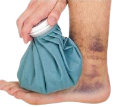

Bruises (Contusions): These are common after earthquakes due to falling debris or impact. They happen when small blood vessels break under the skin, causing blood to leak into nearby tissues. The area may look red or purple at first, then fade to green or yellow as it heals.
First Aid: Rest the injured area to prevent further damage.
Apply a cold compress or ice pack wrapped in cloth for 15–20 minutes every hour during the first 24–48 hours to reduce swelling and bleeding.
If swelling is present, use a gentle elastic bandage. Do not wrap too tightly. Elevate the limb above heart level if possible.
For pain, use acetaminophen. Avoid aspirin or NSAIDs early on, as they can increase bleeding.
Seek medical help if the bruise is large, very painful, or shows signs of infection (like warmth, redness, or pus).
 Back